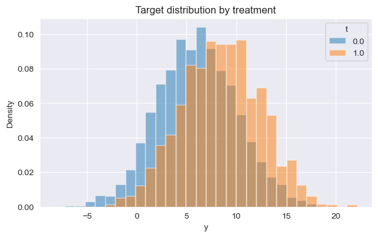
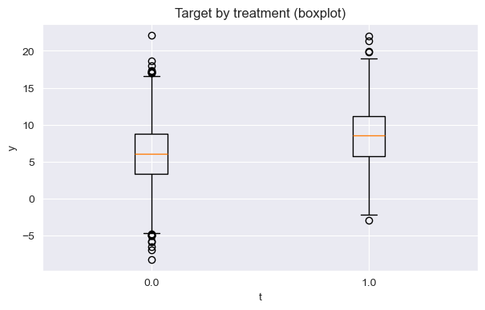

Scenario 1#
Is RCT |
Treatment |
Outcome |
EDA |
Estimands |
Refutation |
Docs, Examples |
Synthetic tests |
|---|---|---|---|---|---|---|---|
Observational |
Binary |
Continuous |
No |
No |
No |
No |
No |
Generate data#
import numpy as np
import pandas as pd
import matplotlib.pyplot as plt
import seaborn as sns
from causalkit.data import CausalDatasetGenerator, CausalData
# Reproducibility
np.random.seed(42)
confounder_specs = [
{"name": "tenure_months", "dist": "normal", "mu": 24, "sd": 12},
{"name": "avg_sessions_week", "dist": "normal", "mu": 5, "sd": 2},
{"name": "spend_last_month", "dist": "uniform", "a": 0, "b": 200},
{"name": "premium_user", "dist": "bernoulli", "p": 0.25},
{"name": "urban_resident", "dist": "bernoulli", "p": 0.60},
]
# Causal effect and noise
theta = 1.8 # ATE: +1.8 ARPU units if new_feature = 1
sigma_y = 3.5 # ARPU noise std
target_t_rate = 0.35 # ~35% treated
# Effects of confounders on ARPU (baseline, additive)
# Order: tenure_months, avg_sessions_week, spend_last_month, premium_user, urban_resident
beta_y = np.array([
0.05, # tenure_months: small positive effect
0.40, # avg_sessions_week: strong positive effect
0.02, # spend_last_month: recent spend correlates with ARPU
2.00, # premium_user: premium users have higher ARPU
1.00, # urban_resident: urban users slightly higher ARPU
], dtype=float)
# Effects of confounders on treatment assignment (log-odds scale)
beta_t = np.array([
0.015, # tenure_months
0.10, # avg_sessions_week
0.002, # spend_last_month
0.75, # premium_user
0.30, # urban_resident: more likely to get the feature
], dtype=float)
gen = CausalDatasetGenerator(
theta=theta,
outcome_type="continuous",
sigma_y=sigma_y,
target_t_rate=target_t_rate,
seed=42,
confounder_specs=confounder_specs,
beta_y=beta_y,
beta_t=beta_t,
)
# Create dataset
causal_data = gen.to_causal_data(
n=5000,
cofounders = [
"tenure_months",
"avg_sessions_week",
"spend_last_month",
"premium_user",
"urban_resident",
]
)
print(f"Generated {len(causal_data.df)} observations")
print(f"True causal effect: {gen.theta}")
print(f"Treatment rate: {causal_data.df['t'].mean():.1%}")
print(f"Average outcome: {causal_data.df['y'].mean():.2f}")
# Show first few rows
causal_data.df.head()
---------------------------------------------------------------------------
ModuleNotFoundError Traceback (most recent call last)
Cell In[1], line 5
3 import matplotlib.pyplot as plt
4 import seaborn as sns
----> 5 from causalkit.data import CausalDatasetGenerator, CausalData
7 # Reproducibility
8 np.random.seed(42)
File ~/work/CausalKit/CausalKit/causalkit/__init__.py:28
26 from causalkit import data
27 from causalkit import design
---> 28 from causalkit import inference
30 __version__ = "0.1.0"
31 __all__ = ["data", "design", "inference"]
File ~/work/CausalKit/CausalKit/causalkit/inference/__init__.py:11
9 from causalkit.inference.att.conversion_z_test import conversion_z_test
10 from causalkit.inference.att.bootstrap_diff_means import bootstrap_diff_means
---> 11 from causalkit.inference.ate.dml_ate import dml_ate as dml
12 from causalkit.inference.ate.causalforestdml import causalforestdml as causalforestdml
13 from causalkit.inference.att.dml_att import dml_att as dml_att
File ~/work/CausalKit/CausalKit/causalkit/inference/ate/__init__.py:7
1 """
2 Average Treatment Effect (ATE) inference methods for causalkit.
3
4 This module provides methods for estimating average treatment effects.
5 """
----> 7 from causalkit.inference.ate.dml_ate import dml_ate
8 from causalkit.inference.ate.causalforestdml import causalforestdml
10 __all__ = ['dml_ate', 'causalforestdml']
File ~/work/CausalKit/CausalKit/causalkit/inference/ate/dml_ate.py:13
10 from typing import Dict, Any, Optional, Union, List, Tuple
12 import doubleml as doubleml
---> 13 from catboost import CatBoostRegressor, CatBoostClassifier
14 from sklearn.ensemble import RandomForestRegressor, RandomForestClassifier
16 from causalkit.data.causaldata import CausalData
ModuleNotFoundError: No module named 'catboost'
EDA#
from causalkit.eda import CausalEDA
eda = CausalEDA(causal_data)
# 1) Data health check
health = eda.data_health_check()
print("Data health:")
for k, v in health.items():
print(f" - {k}: {v}")
Data health:
- constant_columns: []
- n_duplicates: 0
- n_rows: 5000
Missingness (top rows):
| missing_rate | n_missing | |
|---|---|---|
| y | 0.0 | 0 |
| t | 0.0 | 0 |
| tenure_months | 0.0 | 0 |
| avg_sessions_week | 0.0 | 0 |
| spend_last_month | 0.0 | 0 |
| premium_user | 0.0 | 0 |
| urban_resident | 0.0 | 0 |
Total missing cells: 0
# 2) Simple outcome/treatment summaries
summ = eda.summaries()
print("Share treated:", round(float(summ["treatment_rate"]), 4))
print("Naive diff (treated - control):",
round(float(summ["naive_diff"]), 4) if pd.notna(summ["naive_diff"]) else summ["naive_diff"])
print("\nOutcome by treatment:")
display(summ["outcome_by_treatment"])
Share treated: 0.3412
Naive diff (treated - control): 2.4398
Outcome by treatment:
| count | mean | std | |
|---|---|---|---|
| t | |||
| 0.0 | 3294 | 6.049281 | 3.961794 |
| 1.0 | 1706 | 8.489068 | 3.937085 |
# 3) Propensity, predictability (AUC), and positivity
ps = eda.fit_propensity()
auc = eda.treatment_predictability_auc(ps)
pos = eda.positivity_check(ps)
print("Treatment predictability AUC:", round(auc, 4))
print("Positivity check:", pos)
Treatment predictability AUC: 0.623
Positivity check: {'bounds': (0.05, 0.95), 'share_below': 0.0, 'share_above': 0.0, 'flag': False}
# 4) Balance diagnostics (SMD) pre/post IPTW and a Love plot
balance_df = eda.balance_table(ps, estimand="ATE")
print("Top covariates by |SMD_unweighted|:")
display(balance_df.head(20))
# Love plot
eda.love_plot(balance_df, top_n=25)
plt.show()
Top covariates by |SMD_unweighted|:
| covariate | SMD_unweighted | SMD_weighted | flag_unw | flag_w | |
|---|---|---|---|---|---|
| 3 | premium_user | 0.329364 | -0.001253 | True | False |
| 1 | avg_sessions_week | 0.198836 | 0.005637 | True | False |
| 0 | tenure_months | 0.172035 | 0.000315 | True | False |
| 4 | urban_resident | 0.100418 | -0.000195 | True | False |
| 2 | spend_last_month | 0.080595 | -0.003427 | False | False |
# 5) Weight diagnostics and propensity score overlap
wdiag = eda.weight_diagnostics(ps, estimand="ATE")
print("Weight diagnostics:")
for k, v in wdiag.items():
print(f" - {k}: {v}")
# Overlap plot (treated vs control propensity distributions)
eda.plot_ps_overlap(ps)
plt.show()
Weight diagnostics:
- ESS_all: 4209.562077633034
- ESS_treated: 1567.5385411996365
- ESS_control: 3201.610599855847
- w_all_quantiles: [1.6055703363251397, 3.351207269981197, 3.8397035367001444, 4.783347714944799, 7.673993949733509]
# 6) Outcome distribution by treatment (hist + boxplot)
fig1, fig2 = eda.plot_target_by_treatment()
plt.show()


# 7) One-shot consolidated report (if you prefer a single call)
report = eda.design_report()
# Example: access parts
print("AUC:", report["treat_auc"])
print("Positivity:", report["positivity"])
print("ESS_all:", report["weights"]["ESS_all"])
AUC: 0.6230451330387909
Positivity: {'bounds': (0.05, 0.95), 'share_below': 0.0, 'share_above': 0.0, 'flag': False}
ESS_all: 4209.562077633034
Inference#
# Import inference methods
from causalkit.inference.ate import dml_ate
from causalkit.inference.att import dml_att
# Estimate Average Treatment Effect (ATE)
print("=== ORIGINAL CAUSAL ESTIMATES ===")
ate_result = dml_ate(causal_data, n_folds=3, confidence_level=0.95)
print(f"ATE Estimate: {ate_result['coefficient']:.3f}")
print(f"ATE 95% CI: [{ate_result['confidence_interval'][0]:.3f}, {ate_result['confidence_interval'][1]:.3f}]")
print(f"ATE p-value: {ate_result['p_value']:.6f}")
print(f"True effect: {gen.theta:.3f}")
=== ORIGINAL CAUSAL ESTIMATES ===
ATE Estimate: 1.800
ATE 95% CI: [1.563, 2.036]
ATE p-value: 0.000000
True effect: 1.800
Refutation#
# Import refutation utilities
from causalkit.refutation import (
refute_placebo_outcome,
refute_placebo_treatment,
refute_subset,
)
=== REFUTATION TESTS ===
print("--- Placebo Outcome Test ---")
print("Shuffling outcome variable (breaking outcome-treatment link)")
print("Expected: θ ≈ 0, large p-value\n")
# Test with ATE estimator
ate_placebo_outcome = refute_placebo_outcome(
dml_ate,
causal_data,
random_state=42
)
print(f"ATE with shuffled outcome:")
print(f" θ = {ate_placebo_outcome['theta']:.4f}")
print(f" p-value = {ate_placebo_outcome['p_value']:.4f}")
--- Placebo Outcome Test ---
Shuffling outcome variable (breaking outcome-treatment link)
Expected: θ ≈ 0, large p-value
ATE with shuffled outcome:
θ = -0.0059
p-value = 0.3619
print("\n--- Placebo Treatment Test ---")
print("Shuffling treatment variable (breaking treatment-outcome link)")
print("Expected: θ ≈ 0, large p-value\n")
# Test with ATE estimator
ate_placebo_treatment = refute_placebo_treatment(
dml_ate,
causal_data,
random_state=42
)
print(f"ATE with shuffled treatment:")
print(f" θ = {ate_placebo_treatment['theta']:.4f}")
print(f" p-value = {ate_placebo_treatment['p_value']:.4f}")
--- Placebo Treatment Test ---
Shuffling treatment variable (breaking treatment-outcome link)
Expected: θ ≈ 0, large p-value
ATE with shuffled treatment:
θ = 0.1215
p-value = 0.3024
print("\n--- Subset Robustness Test ---")
print("Testing stability on random subsets of data")
print("Expected: θ similar to original estimate\n")
# Test multiple subset sizes
subset_fractions = [0.6, 0.8, 0.9]
print("ATE Subset Tests:")
print(f"Original ATE: {ate_result['coefficient']:.4f}")
ate_subset_results = []
for fraction in subset_fractions:
subset_result = refute_subset(
dml_ate,
causal_data,
fraction=fraction,
random_state=42
)
ate_subset_results.append(subset_result)
print(f" {fraction*100:.0f}% subset: θ = {subset_result['theta']:.4f}, p = {subset_result['p_value']:.4f}")
--- Subset Robustness Test ---
Testing stability on random subsets of data
Expected: θ similar to original estimate
ATE Subset Tests:
Original ATE: 1.7996
60% subset: θ = 1.7913, p = 0.0000
80% subset: θ = 1.8382, p = 0.0000
90% subset: θ = 1.7352, p = 0.0000
# Import sensitivity analysis functions
from causalkit.refutation import sensitivity_analysis, get_sensitivity_summary
print("--- Basic Sensitivity Analysis ---")
print("Testing robustness to unobserved confounding\n")
# Perform sensitivity analysis with moderate confounding assumptions
print("Scenario 1: Moderate unobserved confounding")
print("cf_y=0.03 (outcome confounding), cf_d=0.03 (treatment confounding)")
try:
# Run sensitivity analysis on our ATE result
sensitivity_report_1 = sensitivity_analysis(
ate_result,
cf_y=0.03, # Confounding strength affecting outcome
cf_d=0.03, # Confounding strength affecting treatment
rho=1.0 # Perfect correlation between unobserved confounders
)
print(sensitivity_report_1)
except Exception as e:
print(f"Note: Sensitivity analysis requires the model object to support it.")
print(f"Error: {e}")
print("\nThis feature works best with DoubleML models that have sensitivity analysis capabilities.")
--- Basic Sensitivity Analysis ---
Testing robustness to unobserved confounding
Scenario 1: Moderate unobserved confounding
cf_y=0.03 (outcome confounding), cf_d=0.03 (treatment confounding)
================== Sensitivity Analysis ==================
------------------ Scenario ------------------
Significance Level: level=0.95
Sensitivity parameters: cf_y=0.03; cf_d=0.03, rho=1.0
------------------ Bounds with CI ------------------
CI lower theta lower theta theta upper CI upper
t 1.359126 1.557897 1.799606 2.041315 2.239712
------------------ Robustness Values ------------------
H_0 RV (%) RVa (%)
t 0.0 20.252533 18.200268